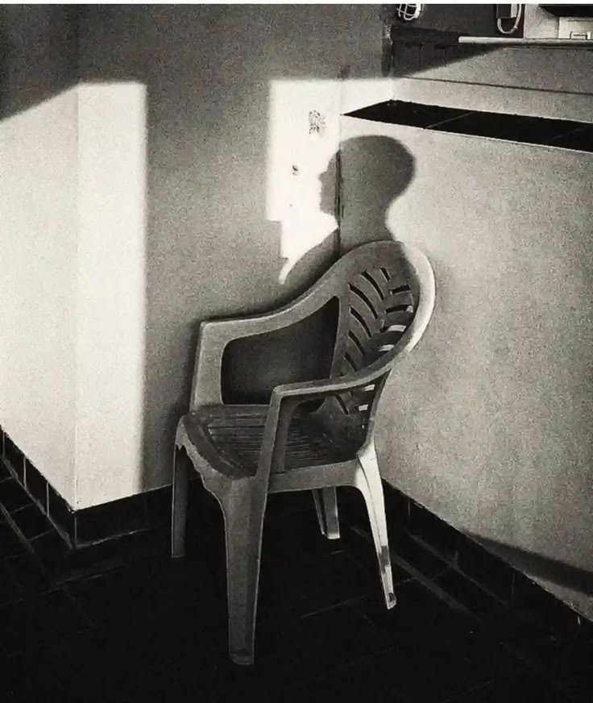

Kita lahir tanpa pernah diminta untuk memilih.
Kita tidak memilih keluarga tempat kita dilahirkan. Tidak memilih kota tempat kita tumbuh. Tidak memilih keadaan ekonomi yang membentuk masa kecil kita. Bahkan sebelum kita mampu memahami apa arti kehidupan, dunia sudah lebih dulu menentukan sebagian besar keadaan yang akan kita jalani.
Lalu kita tumbuh.
Dan perlahan, pilihan-pilihan mulai diberikan kepada kita.
Sekolah.
Kuliah.
Pekerjaan.
Uang.
Karier.
Pernikahan.
Rumah.
Keluarga.
Semua terlihat seperti pilihan. Namun anehnya, hampir semuanya memiliki konsekuensi jika kita memilih untuk tidak mengikutinya.
Kita menyebutnya kebebasan.
Mungkin memang begitu.
Atau mungkin kita hanya bebas memilih dari pilihan-pilihan yang sudah
disediakan.

Sejak kecil, kita diajarkan bagaimana menjadi manusia yang “baik”.
Belajar yang rajin.
Dapatkan nilai yang bagus.
Masuk universitas.
Dapatkan pekerjaan.
Miliki penghasilan.
Bangun karier.
Jangan gagal.
Dan ketika akhirnya berhasil mencapai semua itu, kita diberi satu kata:
sukses.
Tetapi hampir tidak pernah ada yang bertanya apakah kita menginginkan kehidupan tersebut.
Kita terlalu sibuk mengejar sesuatu sampai lupa mempertanyakan mengapa kita mengejarnya.
Mungkin karena manusia memiliki kebutuhan yang aneh.
Kita tidak hanya ingin hidup.
Kita ingin kehidupan kita terlihat berarti.
Kita ingin diakui.
Kita ingin dianggap berhasil.
Kita ingin memiliki sesuatu yang bisa ditunjukkan kepada orang lain sebagai bukti bahwa hidup kita tidak sia-sia.
Maka kita bekerja lebih keras.
Membeli lebih banyak.
Mengumpulkan pencapaian.
Mengunggah kehidupan.
Membandingkan diri.
Kemudian mengulang semuanya.
Dan ketika malam datang, ketika tidak ada lagi orang yang melihat, ketika layar ponsel akhirnya dimatikan, muncul pertanyaan yang tidak selalu kita sukai:
“Sebenarnya aku sedang hidup untuk apa?”
Mungkin inilah salah satu ironi terbesar manusia.
Kita takut mati, tetapi sering kali tidak benar-benar hidup.
Kita menghabiskan bertahun-tahun mempersiapkan masa depan sampai lupa bahwa satu-satunya waktu yang benar-benar kita miliki hanyalah sekarang.
Kita berkata:
“Nanti kalau sudah lulus.”
“Nanti kalau sudah punya uang.”
“Nanti kalau sudah sukses.”
“Nanti kalau sudah punya rumah.”
“Nanti.”
Seolah-olah kehidupan yang sebenarnya selalu berada beberapa tahun di depan kita.
Kita terus menunda hidup demi sebuah kehidupan yang belum tentu pernah datang.
Dan waktu tidak pernah bernegosiasi.
Ia berjalan tanpa peduli apakah kita sudah siap atau belum.
Yang lebih menarik adalah bagaimana kita belajar menerima semua ini sebagai sesuatu yang normal.
Bangun.
Pergi.
Bekerja.
Belajar.
Menghasilkan.
Membayar.
Mengulang.
Kita menyebut rutinitas sebagai kehidupan.
Kita menyebut kesibukan sebagai produktivitas.
Kita menyebut kelelahan sebagai perjuangan.
Dan terkadang, kita bahkan merasa bersalah ketika berhenti.
Seolah-olah manusia hanya memiliki nilai ketika ia sedang menghasilkan sesuatu.
Mungkin karena dunia modern tidak terlalu membutuhkan manusia yang bertanya.
Dunia membutuhkan manusia yang terus berjalan.
Terus membeli.
Terus bekerja.
Terus mengejar.
Terus merasa kurang.
Karena manusia yang merasa cukup mungkin tidak akan terlalu sibuk mengejar sesuatu yang sebenarnya tidak ia perlukan.
Tetapi siapa yang sebenarnya menciptakan standar itu?
Keluarga?
Masyarakat?
Sistem?
Media?
Atau kita sendiri?
Mungkin semuanya.
Kita hidup di antara begitu banyak suara sampai sulit membedakan mana suara dunia dan mana suara diri sendiri.
Kita mengatakan,
“Aku ingin sukses.”
Tetapi dari mana datangnya definisi sukses itu?
Kita mengatakan,
“Aku ingin kaya.”
Tetapi kapan kita belajar bahwa kaya adalah sesuatu yang harus dikejar?
Kita mengatakan,
“Aku ingin bahagia.”
Tetapi mengapa kita begitu sering mengukur kebahagiaan melalui kehidupan orang lain?
Barangkali masalah manusia bukan karena ia tidak tahu apa yang diinginkannya.
Barangkali masalahnya adalah ia terlalu lama mendengar keinginan orang lain sampai akhirnya mengira suara itu miliknya sendiri.
Dan mungkin kebebasan yang sebenarnya bukanlah memiliki banyak pilihan.
Mungkin kebebasan adalah kemampuan untuk bertanya:
“Mengapa aku memilih ini?”
Bukan sekadar:
“Apa yang harus aku pilih?”
Karena hidup yang dipenuhi pilihan belum tentu merupakan hidup yang bebas.
Seseorang bisa memilih pekerjaannya, tetapi tidak pernah memilih alasan mengapa ia harus bekerja.
Seseorang bisa memilih pasangannya, tetapi mungkin memilih berdasarkan ketakutan untuk sendirian.
Seseorang bisa memilih gaya hidupnya, tetapi mungkin hanya mengikuti apa yang dianggap normal.
Kita bisa memiliki kendali atas keputusan-keputusan kecil dalam hidup, sementara keputusan terbesar tentang bagaimana seharusnya kita hidup telah dibuat jauh sebelum kita menyadarinya.
Mungkin itulah kondisi manusia.
Kita dilahirkan tanpa pilihan.
Kemudian diberikan pilihan.
Lalu menghabiskan hidup untuk mencari tahu apakah pilihan-pilihan tersebut benar-benar milik kita.
Dan pada akhirnya, kita mati.
Tidak ada jaminan bahwa kita akan menemukan jawabannya.
Mungkin memang tidak ada jawaban.
Mungkin kehidupan tidak pernah dimaksudkan untuk memiliki satu tujuan yang pasti.
Tetapi jika memang demikian, setidaknya kita memiliki satu pertanyaan yang layak dipertahankan:
Jika tidak ada seorang pun yang melihat hidup kita, apakah kita masih akan menjalani kehidupan yang sama?
Jika jawabannya tidak,
mungkin sudah waktunya bertanya—
selama ini, sebenarnya siapa yang sedang kita jalani hidupnya?